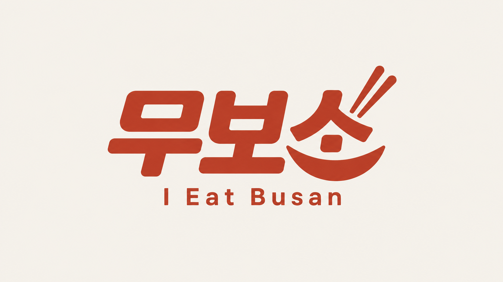

나에게 맞는 부산의 맛
DB 음식 목록을 불러오는 중입니다.
식단·알레르기 설정나의 조건을 알려 주세요.
무보소와 대화하기
TASTE OF BUSAN
부산의 맛을 둘러보세요
마음이 가는 음식부터 살펴보셔도 좋아요.
전체 음식
등록 음식 전체 목록입니다. 식단·알레르기 조건을 반영하려면 도우미와 대화해 주세요.
MY FOOD PREFERENCES
나의 한 끼 기준
대화에서 알려 주신 조건을 모아두었어요.
나의 식단설정 대기
알레르기 · 복수 선택
먹고 싶은 주재료·음식
추가로 피하는 재료
음식 종류와 맵기
식당에 한 번 더 확인해 주세요.
표시된 정보만으로 비건 적합성이나 알레르기 안전성을 보증할 수 없습니다. 실제 재료·육수·양념과 교차 접촉 여부는 식당 확인이 필요합니다.